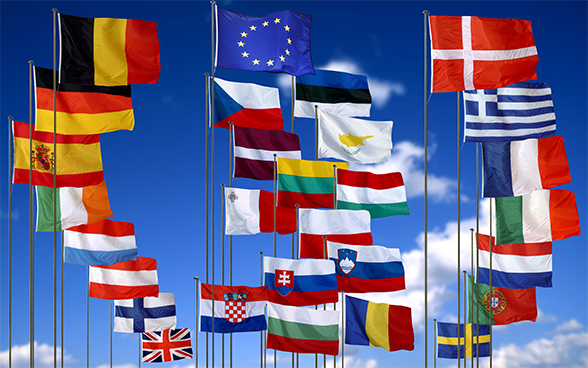

The European Union (EU) is a political and economic union of 27 member states that are located primarily in Europe. The union has a total area of 4,233,255.3 km2 (1,634,469.0 sq mi) and an estimated total population of about 447 million. An internal single market has been established through a standardised system of laws that apply in all member states in those matters, and only those matters, where the states have agreed to act as one. EU policies aim to ensure the free movement of people, goods, services and capital within the internal market; enact legislation in justice and home affairs; and maintain common policies on trade, agriculture, fisheries and regional development. Passport controls have been abolished for travel within the Schengen Area. The eurozone is a monetary union established in 1999, coming into full force in 2002, that is composed of the 19 EU member states that use the euro currency. The EU has often been described as a sui generis political entity (without precedent or comparison) with the characteristics of either a federation or confederation.
Here are the 3 largest countries in the European Union:
France, officially the French Republic (French: République française), is a transcontinental country predominantly located in Western Europe and spanning overseas regions and territories in the Americas and the Atlantic, Pacific and Indian Oceans. Its metropolitan area extends from the Rhine to the Atlantic Ocean and from the Mediterranean Sea to the English Channel and the North Sea; overseas territories include French Guiana in South America, Saint Pierre and Miquelon in the North Atlantic, the French West Indies, and many islands in Oceania and the Indian Ocean. Due to its several coastal territories, France has the largest exclusive economic zone in the world. France borders Belgium, Luxembourg, Germany, Switzerland, Monaco, Italy, Andorra, and Spain in continental Europe, as well as the Netherlands, Suriname, and Brazil in the Americas via its overseas territories in French Guiana and Saint Martin. Its eighteen integral regions (five of which are overseas) span a combined area of 643,801 km2 (248,573 sq mi) and over 67 million people (as of May 2021). France is a unitary semi-presidential republic with its capital in Paris, the country's largest city and main cultural and commercial centre; other major urban areas include Marseille, Lyon, Toulouse, Lille, Bordeaux, and Nice.
Here are the 3 largest cities in France:
Spain, is a country in southwestern Europe with parts of territory in the Atlantic Ocean and across the Mediterranean Sea. The largest part of Spain is situated on the Iberian Peninsula; its territory also includes the Canary Islands in the Atlantic Ocean, the Balearic Islands in the Mediterranean Sea, and the autonomous cities of Ceuta and Melilla in Africa. The country's mainland is bordered to the south by Gibraltar; to the south and east by the Mediterranean Sea; to the north by France, Andorra and the Bay of Biscay; and to the west by Portugal and the Atlantic Ocean. With an area of 505,990 km2 (195,360 sq mi), Spain is the second-largest country in the European Union (EU) and, with a population exceeding 47.4 million, the fourth-most populous EU member state. Spain's capital and largest city is Madrid; other major urban areas include Barcelona, Valencia, Seville, Zaragoza, Málaga, Murcia, Palma de Mallorca, Las Palmas de Gran Canaria and Bilbao.
Here are the 3 largest cities in Spain:
Sweden, officially the Kingdom of Sweden, is a country in Northern Europe. It borders Norway to the west and north, Finland to the east, and is connected to Denmark in the southwest by a bridge–tunnel across the Öresund. At 450,295 square kilometres (173,860 sq mi), Sweden is the largest Nordic country, the third-largest country in the European Union, and the fifth-largest country in Europe. The capital and largest city is Stockholm. Sweden has a total population of 10.4 million, and a low population density of 25.5 inhabitants per square kilometre (66/sq mi), with around 87% of Swedes residing in urban areas in the central and southern half of the country.
Here are the 3 largest cities in Sweden: